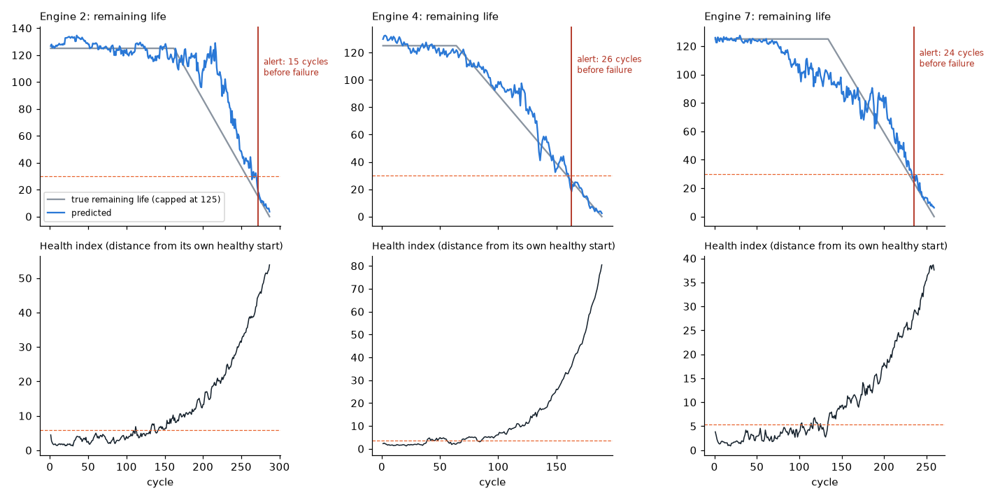

Predict failures before they happen
A remaining-life model, a maintenance alert and an early health index, built on NASA's turbofan run-to-failure dataset (C-MAPSS FD001: 100 engines, 21 sensors). Measured the way a maintenance manager would: how early the warning comes, how often it comes too early, and whether any failure is missed.
Predictive versus a fixed schedule
To be sure no engine fails on a fixed schedule, you must replace every engine at cycle 118 (the shortest life seen, minus a margin). On the held-out engines that throws away a median of 89 cycles of useful life per engine. The predictive alert keeps a median margin of 24 cycles, also with no failure: roughly 65 more cycles of use per engine before maintenance.

Top: predicted remaining life (blue) against the true value (grey, capped at 125 cycles: early life counts as healthy). The red line is the alert. Bottom: the health index, the distance of each engine's sensors from its own healthy first 30 cycles; no failure labels are needed for it.
Choose the alert setting from your cost of downtime
| Alert when predicted life is | Warned in time (10-60 cycles) | Too early (>60) | Missed or <10 cycles | Median warning |
|---|---|---|---|---|
| below 20 cycles | 19 | 0 | 1 | 15 |
| below 30 cycles | 20 | 0 | 0 | 24 |
| below 40 cycles | 18 | 2 | 0 | 37 |
| below 50 cycles | 15 | 5 | 0 | 43 |
An earlier setting gives more time to plan but replaces parts sooner; a later one uses more life but risks a late warning. The right row depends on what an unplanned stop costs you. An alert fires only after 3 cycles in a row below the setting, to avoid one noisy reading triggering work.
Early drift signal
The health index flagged drift in 100 of 100 engines, a median of 92 cycles before failure, typically around the middle of the engine's life. It is a planning signal ("watch this one"), while the remaining-life alert is the "schedule maintenance now" signal.
How this transfers to your equipment
- Start from the data you have: sensor history, and maintenance or failure records (work orders) to label what "failure" means for each machine.
- No failure history yet? The health index works without labels, from each machine's own normal behaviour, and gets sharper as failures are recorded.
- Real data is messier than this benchmark: sensor gaps, changing operating modes, repairs that reset a machine. Those are handled explicitly and checked before any model.
- Tested the honest way: on machines the model never saw, replayed cycle by cycle, like live operation.
NASA C-MAPSS FD001 (simulated turbofan degradation, one operating condition). Trained on 80 engines, alerts measured on 20 held-out engines, error measured on the 100 official test engines. Python, pandas, XGBoost.